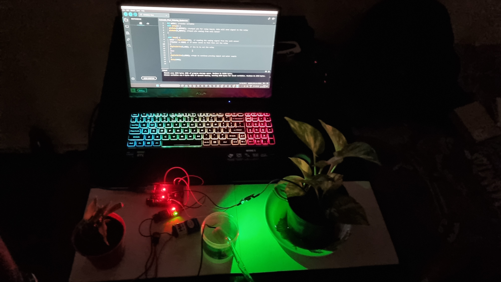
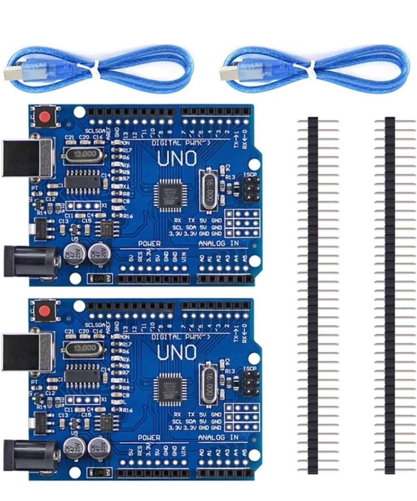
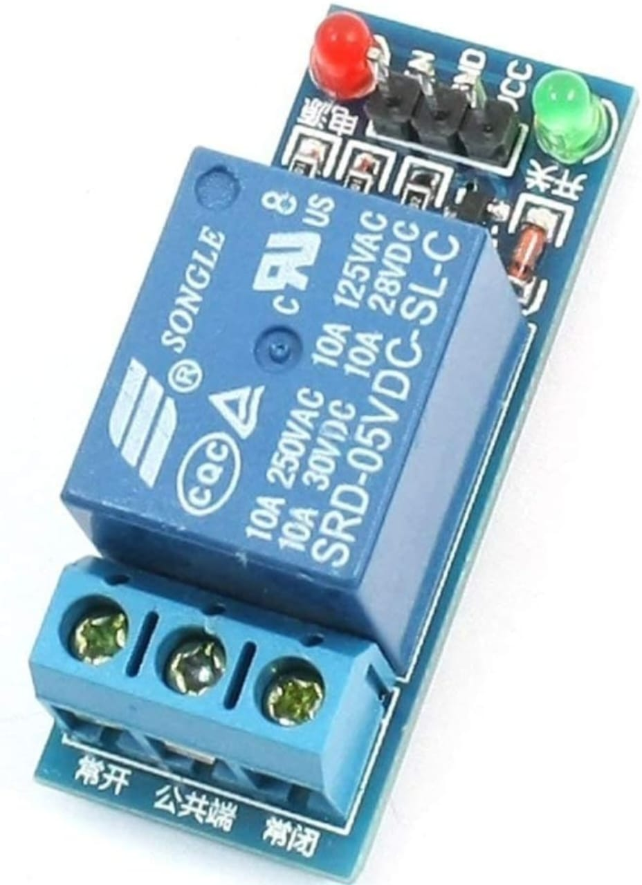
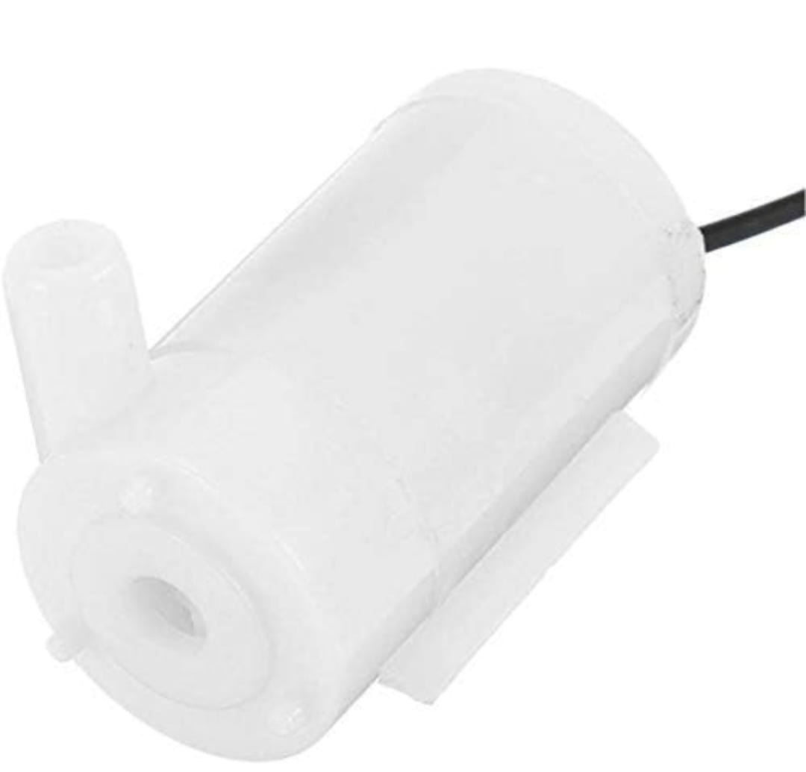
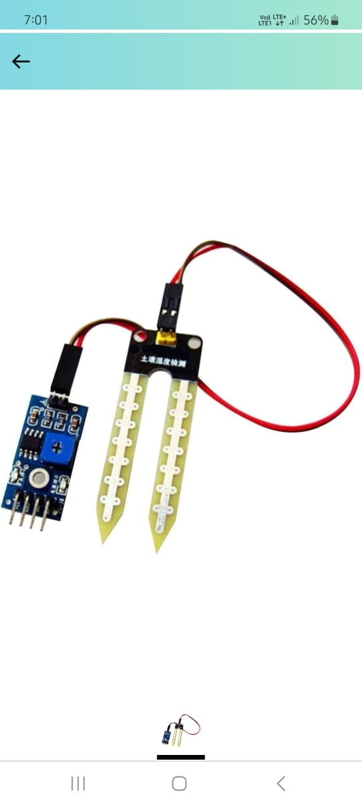

ENERGY AND WATER CONSERVATION USING MOISTURE DETECTOR
ABSTRACT
When a field is irrigated, there is a chance of wastage of water and electricity when the soil has the requisite moisture content already. So a moisture detector is used to determine the moisture content of the soil. It is further connected to the motor pump. This way, the moisture detector controls the amount of water that flows into the field from the water source.On the other hand, electricity is conserved as the motor pump doesn't run unnecessarily i.e, when there is already a requisite amount of moisture content in the soil.
BENEFITS OF IMPLEMENTING THIS METHOD
Water conservation
A moisture detector can help prevent overwatering by providing accurate information about the moisture content in the soil, allowing for precise watering to avoid water wastage.
Improved plant health
Plants require a specific amount of water to thrive. By using a moisture detector, you can ensure that plants receive the right amount of water, which can improve their health, growth, and yield.
Time saving
Moisture detectors can automate the process of watering and irrigation, reducing the time and effort required for manual watering. This is particularly useful for large gardens or farms.
Cost effective
Using a moisture detector can help save money on water bills by preventing overwatering and minimizing water waste. It's is affordable by almost all citizens of the country.
Environment friendly
By using water more efficiently, you can reduce the environmental impact of irrigation and contribute to sustainable water management practices. It does not cause any harm to the environment.
MAJOR MATERIALS REQUIRED
ARDUINO UNO
RELAY MODULE
WATER PUMP
SOIL MOISTURE SENSOR
WORKING OF THE PROJECT
A moisture detector for watering plants using an Arduino typically involves using a soil moisture sensor and an Arduino microcontroller. The sensor measures the amount of moisture present in the soil, and the microcontroller processes the data from the sensor to determine when to activate a watering system. Here is a brief overview of how the moisture detector works: The soil moisture sensor is inserted into the soil and connected to the Arduino microcontroller. The sensor usually has two probes that are inserted into the soil. The Arduino is programmed to read the analog signal from the soil moisture sensor. The sensor output voltage varies with the amount of moisture in the soil. The Arduino compares the sensor output voltage with a pre-defined threshold value, which determines when the soil is too dry and needs watering. If the moisture level is below the threshold, the Arduino sends a signal to activate a watering system. This can be done using a relay module or other similar components. The watering system can be customized based on the user's requirements. For example, it can be a simple water pump connected to a water source, or it can be a more sophisticated system with multiple sensors and pumps. Once the system has been activated, the Arduino will wait for a set amount of time before taking another moisture reading. This prevents overwatering and ensures that the soil has enough time to absorb water. Overall, the moisture detector for watering plants using an Arduino is a relatively simple and effective solution that can be customized to suit a wide range of indoor and outdoor gardening applications.


TEAM MEMBERS
Ramji 112122048
Nanthan 112122039
Akilesh 112122060
Rashmi 112122049
Sai Pranav 112122005
Siva Bhagya 112122058
Shivani 112122055
Ramasamy 112122047